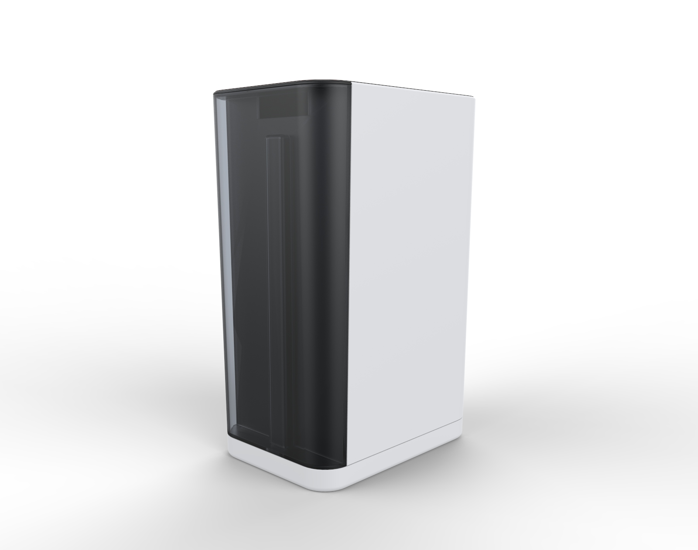
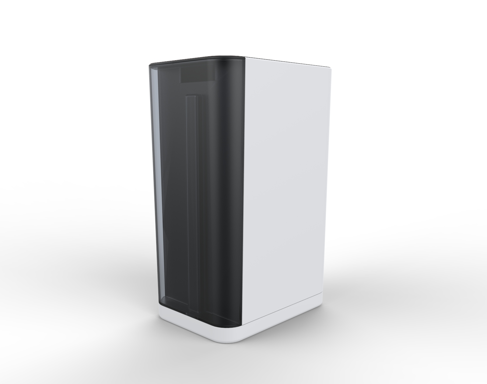
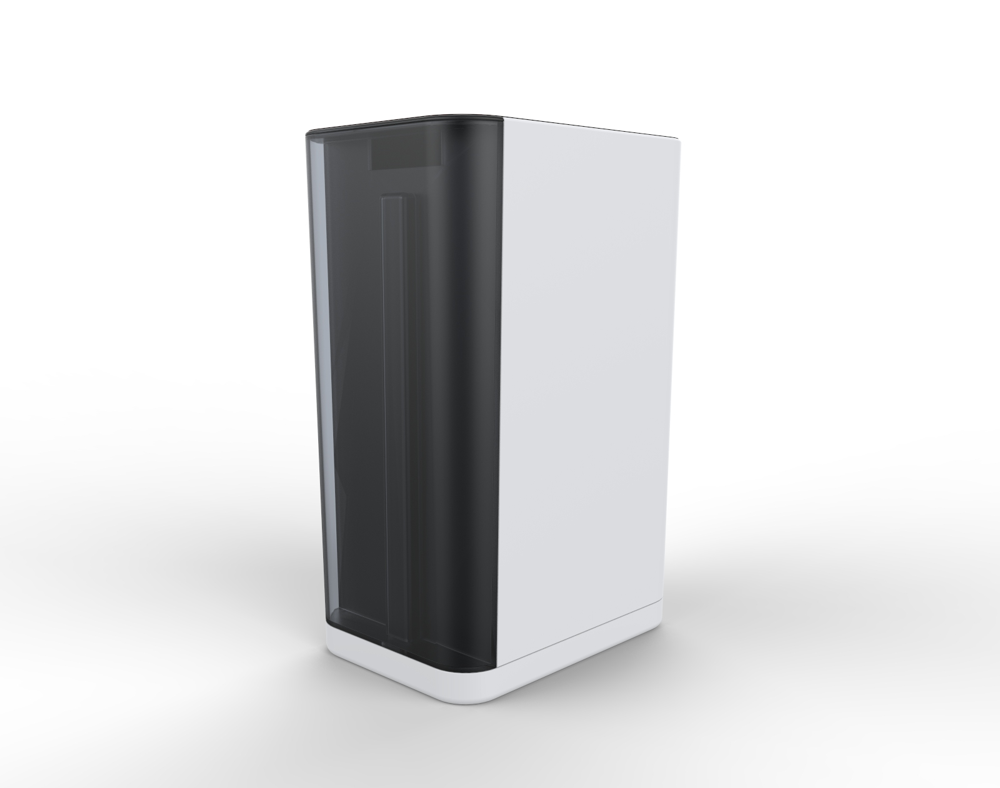
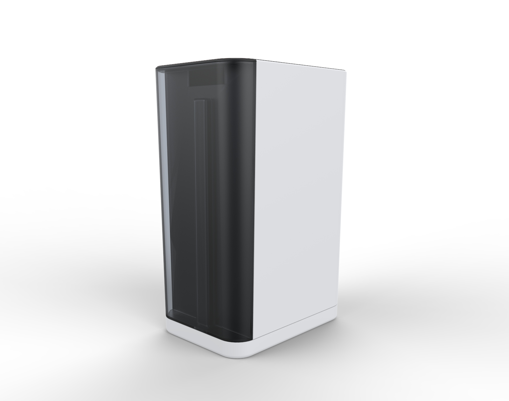

 

A project in brand identity, the No-Spill Detergent aims to expand Muji's product line. Inspired by Muji's user-focused minimalism, the No-Spill Detergent achieves better function through rational design.
Made from two blow molded bodies and an injection molded cap, the No-Spill Detergent could be produced cheaply from recycled HDPE.